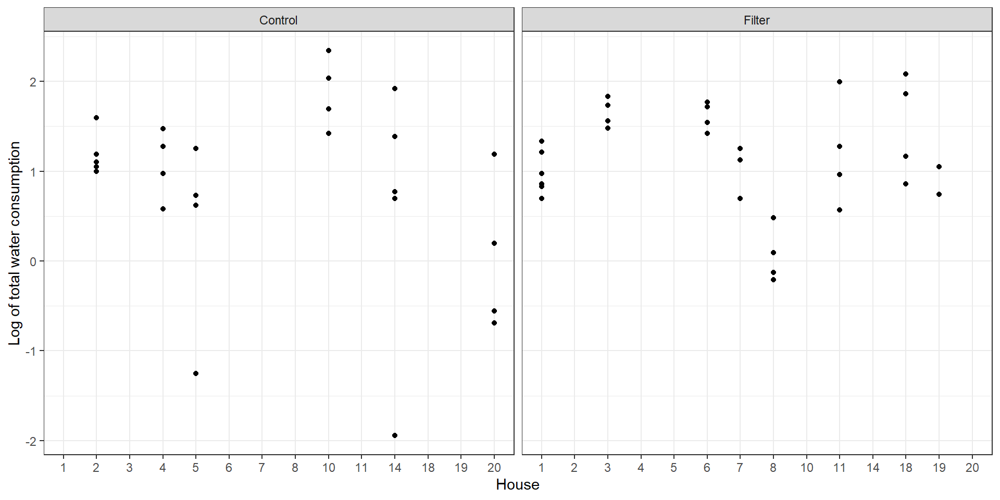

# two ways to implement two samples independent t-test in R## t-test functiont.test(pef ~ trt, data=pef.long,var.equal =TRUE)
Two Sample t-test
data: pef by trt
t = -1.4387, df = 18, p-value = 0.1674
alternative hypothesis: true difference in means between group control and group treatment is not equal to 0
95 percent confidence interval:
-55.35666 10.35666
sample estimates:
mean in group control mean in group treatment
317.5 340.0
## using linear regressionsummary(lm(pef~trt,data=pef.long))
Call:
lm(formula = pef ~ trt, data = pef.long)
Residuals:
Min 1Q Median 3Q Max
-77.50 -15.00 2.50 24.38 47.50
Coefficients:
Estimate Std. Error t value Pr(>|t|)
(Intercept) 317.50 11.06 28.711 <2e-16 ***
trttreatment 22.50 15.64 1.439 0.167
---
Signif. codes: 0 '***' 0.001 '**' 0.01 '*' 0.05 '.' 0.1 ' ' 1
Residual standard error: 34.97 on 18 degrees of freedom
Multiple R-squared: 0.1031, Adjusted R-squared: 0.05331
F-statistic: 2.07 on 1 and 18 DF, p-value: 0.1674
The estimated treatment effect is 340-317.5 = 22.5 (95% CI = [-10.36, 55.36])
Standard error is 15.64
1.1.3 Consider the paired structure
t.test(pef$pef1,pef$pef0,paired=T)
Paired t-test
data: pef$pef1 and pef$pef0
t = 3.2134, df = 9, p-value = 0.0106
alternative hypothesis: true mean difference is not equal to 0
95 percent confidence interval:
6.660412 38.339588
sample estimates:
mean difference
22.5
sd(pef$pef1-pef$pef0)/sqrt(10) # standard error of estimate
[1] 7.001984
Same estimated treatment error is 22.5, but more precise with lower standard error 7.0019838
NoteConclusion
When using independent two-sample t-test, the test treat observation from the same subject as independent observations. It not valid, because in this data there is the correlation between observation from the same subject (paired data).
1.1.4 When some pairs have missing data ?
Suppose some paired have one ‘half’ missing data: are these cases still informative?
In this section, we just stop at introduce the linear mixed effects model, when using linear mixed effects model for the paired data without missing data, it equal using paired t-test
\(\beta_0\): the population expected response in control group
\(\beta_1\): treatment different
\(S_i\): systematic differents between individual (assumed ~ N(0,\(\sigma_s^2\)))
\(e_{ij}\): within individual error (assumed ~ N(0,\(\sigma_e^2\)))
The output of the model includes: fixed effect (\(\beta_0,\beta_1\)), random effect (\(\sigma_s^2,\sigma_e^2\))
library(lme4) # mixed effects models## fit lme model for peak flow datafit.lmer1 <-lmer(pef ~ trt + (1|sub), data = pef.long)summary(fit.lmer1)
Linear mixed model fit by REML ['lmerMod']
Formula: pef ~ trt + (1 | sub)
Data: pef.long
REML criterion at convergence: 174.5
Scaled residuals:
Min 1Q Median 3Q Max
-1.33176 -0.45244 0.00889 0.58564 1.22464
Random effects:
Groups Name Variance Std.Dev.
sub (Intercept) 977.8 31.27
Residual 245.1 15.66
Number of obs: 20, groups: sub, 10
Fixed effects:
Estimate Std. Error t value
(Intercept) 317.500 11.059 28.711
trttreatment 22.500 7.002 3.213
Correlation of Fixed Effects:
(Intr)
trttreatmnt -0.317
The estimated treatment effect (mean difference, treatment vs control) and its standard error are:
Estimated treatment effect = 22.5
SE = 7.002
These are exactly the same numbers as those obtained for the paired t-test. (N.B. You may see a difference of sign, simply because the t-test and mixed model estimation treat the two groups in the opposite order when defining the comparison.) So in the case of fully observed paired data, the mixed model (estimated by the “REML” method) is equivalent to the paired t-test.
Using gtsummary and broom package for summary table of model output
\(\sigma_s^2\) = 977.78: represents the between-subject variation, i.e. the variability in “underlying” peak flow between subjects.
\(\sigma_e^2\) = 245.14: represents the within-subject variation, i.e. the variability among peak flow measurements on the same person (under the same treatment)
The (estimated) intraclass correlation coefficient is:
\[ICC = \frac{977.78}{977.78+245.14} = 0.7995\]
NoteExplanation of why accounting for correlation in comparisons within a cluster increases the precision of estimation
Linear mixed model and paired t-test
\[
Y_{ij} = \beta_0 + \beta_1 X_{ij} + S_i + e_{ij}
\] For an individual
Variance in each group is the average of the total variation of observations about treatment group mean: \(Var(\overline{Y_1}) = \frac{(\sigma_s^2 + \sigma_e^2)}{N}\).
So \(Var(\widehat{\beta}) = 2 \times \frac{(\sigma_s^2 + \sigma_e^2)}{N}\)
=> The variance will be higher and the precision of estimation will be lower
1.2 Comparison between clusters
Cluster randomize trials: All members of each cluster receive the same treatment
Anti-malarial trial (Lec 1): Cluster = village, treatment given to all individuals in a village
Comparison of treatment involves between cluster comparisons
Analysis estimates difference between (population) mean of treatment and control groups
Marginal models
Consider the treatment group only in a cluster RCT;
i refers to a cluster, \(Y_{ij}\) is the outcome for a cluster i with \(j^{th}\) measurement of outcome
GEE estimate population mean of each treatment arm, this model take correlation structure into account but treats it as a nuisance
Variance of sample mean INCREASES with (positively) correlated observations (LESS precise), see \(Var(\overline{Y_i}) = \frac{\sigma^2_T (1+(n_i - 1)\rho)}{n_i}\), \(\rho = Corr(Y_{ij},Y_{ik})\)
Can be used to estimate population average odds ratios, rate ratios, etc.
1.2.1 Example data
The Melbourne Water Quality Study was undertaken to assess whether filtering the household water supply for viruses, bacteria and protozoa was associated with a reduced burden of gastroenteritis. The study was a cluster-randomised double blind clinical trial comparing real versus sham water filters. The primary outcome was gastroenteritis during a 68 week follow-up period.
We will use a subset of the data consisting of 2437 individuals in 533 families. Because we have so far only explored methods for continuous data, we will examine a secondary outcome measure – total water consumption.
water <-read_dta("./data/water.dta")water$logwater <-log(water$watertot)water |>mutate(filter =factor(filter,labels =c("Control","Filter"))) |>filter(house <=20) |>ggplot(aes(x =as.factor(house), y = logwater))+geom_point() +facet_wrap(~filter)+labs(x ="House", y ="Log of total water consumption")+theme_bw()

The plot shows that the log of each house’s water consumption was randomly assigned to the treatment and control groups. In this plot, we see the first 20 houses of the dataset.
Use a GEE approach to estimate the effect of the filter on water consumption
Note that the corstr argument will be explained more detail in Section 2.4
=> That means the difference in the real filter group is 6% greater than in the sham filter group (with 95% CI from a 1% decrease to a 14% increase). The p-value is p=0.11. So there is very minimal evidence of an effect of the real filter on changing mean water consumption.
Summary
Correlation structure of your data can impact on your standard error estimates
When the comparison is within cluster/individual like in a cross-over trial, accounting for clustering improve precision (smaller standard errors)
When the comparison is between clusters like in a cluster RCT, modelling clustering reduces precision
Linear mixed models (conditional models) produce estimates taking individual variation into account
GEE models (marginal models) produced population average estimates, but need many clusters